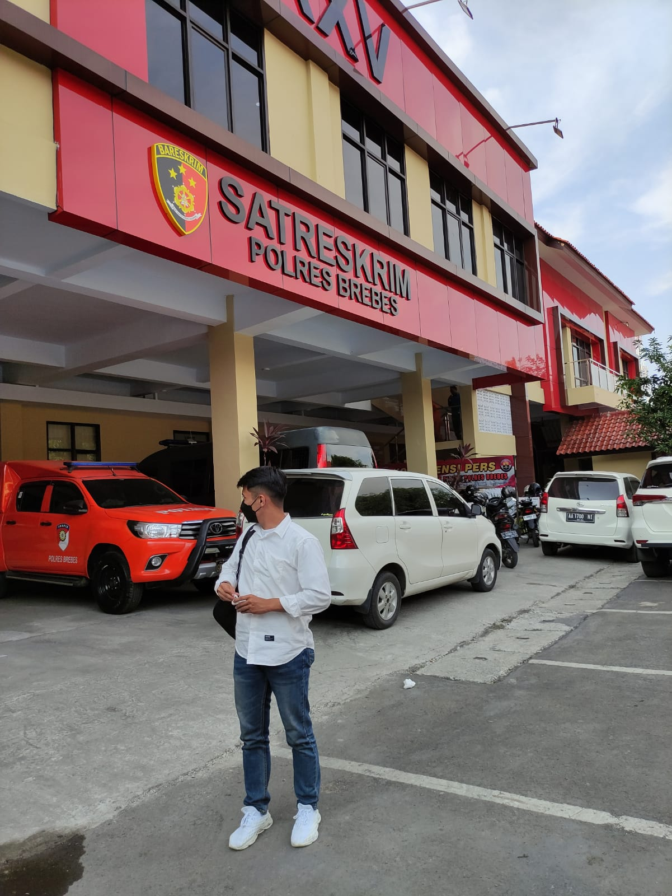

Portofolio
roy dani ardiansyah
Saya Tinggal di cigobang, Kecamatan Paguyangan, Saya sebagai mahasiswa di Universitas Peradaban
Berikut data diri lengkap saya dan posisi yang diusulkan:
1. Posisi yang diusulkan : karang taruna
2. Nama Perusahaan : Balai Desa kedungoleng
3. Nama Personil : roy dani ardiansyah
4. Tempat/Tanggal lahir : Brebes, 05 Juni 2002
5. Pendidikan :
- SDN 4 kedungoleng, 2008-2014
- SMPN 3 Paguyangan, 2014-2017
- SMAN 1 paguyangan, 2017-2020
- Sarjana S1 Teknik Informatika, Universitas Peradaban, 2020-Sekarang
6. Pendidikan Non Formal:
7. Penguasaan Bahasa
- Bahasa Indonesia: Baik
- Bahasa Inggris: Baik
- Bahasa Setempat: Baik
8. Pengalaman Kerja
- Tahun Kerja 2023
- Nama Pekerjaan: karang taruna
- Lokasi Pekerjaan: desa kedungoleng
- Pengguna Jasa: desa kedungoleng
- Nama Perusahaan: dibawah naungan kepala desa
- Uraian Tugas
- Melakukan kegiatan sosial yang bermanfaat untuk desa dan warga masyarakat
- Jangka Waktu: 1 tahun
- Posisi Penugasan: koordinasi lapangan
- Status Kepegawaian pada Perusahaan: organisasi desa
- Surat Referensi dari Pengguna Jasa: -
Foto

Lokasi